Formación profesional online
Expandí tu conciencia. Transformá tu vida. Ayudá a otros.
Formaciones completas para desarrollarte como terapeuta o facilitador en distintas disciplinas del bienestar integral y la psicología transpersonal.
Explorá la dimensión trascendente del ser humano. Esta formación te brinda herramientas para acompañar procesos de autorrealización, integrando lo psicológico con lo espiritual para facilitar una transformación profunda.
+ Más infoUna formación integral para aprender a acompañar procesos de bienestar, autoconocimiento y transformación personal desde una mirada holística, ética y profesional. Aborda al ser humano como una unidad de cuerpo, mente, emoción, energía, vínculos y espiritualidad.
+ Más info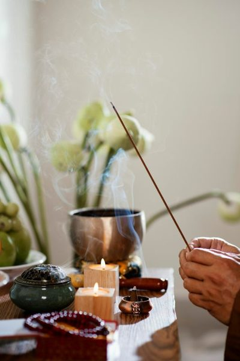
Formación integral en tres ejes complementarios: Registros Akáshicos, Tarot Junguiano y Armonización Energética para diseñar consultas simbólicas, energéticas y espirituales.
+ Más infoUna formación orientada a integrar el Tarot, la psicología profunda y la mirada simbólica como herramientas de autoconocimiento y transformación personal. Recorrés los Arcanos Mayores como un mapa del viaje psíquico, explorando arquetipos e inconsciente.
+ Más infoFormación completa en Mindfulness organizada en 15 módulos: fundamentos, programa MBSR, aplicaciones profesionales en salud mental, educación, niñez y neurociencias.
+ Más infoFormación en la lectura de Registros Akáshicos: fundamentos, sistema energético, karma, seres de luz, sesiones de lectura, péndulo y métodos de liberación simbólica.
+ Más infoFormación en acompañamiento espiritual que integra espiritualidad, logoterapia, árbol genealógico, niño interior, EFT, psicología energética, intuición y ética profesional para acompañar procesos de crecimiento interior y sanación simbólica.
+ Más infoFormación práctica para comprender y aplicar recursos de armonización energética: chakras, diagnóstico energético, herramientas minerales, aromáticas y sonoras, protocolos de sesión y trabajo a distancia.
+ Más infoFormación para comprender y aplicar recursos de Psicobioprogramación orientados al desarrollo personal, la reprogramación interna, la regulación emocional y el trabajo con creencias, subconsciente y subpersonalidades.
+ Más infoFormación en herramientas gestálticas para acompañar procesos de desarrollo personal, conciencia emocional, presencia y autoobservación. Trabajás el aquí y ahora, el darse cuenta, el contacto, el ciclo de la experiencia y técnicas gestálticas aplicadas.
+ Más infoFormación en la dimensión profunda, simbólica y espiritual de la experiencia humana. Explorás ego, sombra, heridas del alma, sueños, intuición, propósito, vínculos álmicos y trascendencia.
+ Más infoFormación en dinámicas vinculares y sistemas humanos desde una mirada relacional y sistémica. Trabajás vínculos, roles, lealtades, comunicación asertiva, gestión de conflictos y facilitación grupal.
+ Más infoUn recorrido cálido y profundo por la sabiduría esencial de las grandes tradiciones espirituales. Exploraremos el núcleo común entre mística, símbolo, contemplación y psicología transpersonal, para recuperar una mirada más amplia, sagrada y consciente de la existencia.
+ Más infoUn proceso de autoconocimiento, sanación simbólica e integración emocional para reconocer las heridas tempranas, sanar el Niño Interior y construir una relación más libre y compasiva con tu historia.
+ Más infoHerramientas de mindfulness para cultivar presencia, regulación emocional y autocuidado frente a la ansiedad y el estrés cotidiano. Recursos simples y progresivos para integrar en tu rutina diaria.
+ Más infoFormación en el sistema de chakras como mapa energético, psicológico y transpersonal del ser humano. Explorás cada chakra con prácticas de visualización, respiración, sonido, mantras y meditación.
+ Más infoHerramientas prácticas para la limpieza y protección energética personal y de espacios: sahumos, cristales, agua, sal, sonido, símbolos y rutinas de higiene energética cotidiana.
+ Más infoEspecializaciones superiores para profundizar y ampliar tu formación profesional con un enfoque integrador y de alto nivel.
Una especialización que te brinda una mirada integral del ser humano, contemplando mente, cuerpo, emociones, espíritu, vínculos y contexto. Integrás herramientas de psicología holística, terapias de base psicológica, gestión emocional, abordaje corporal-energético y habilidades de consultoría y acompañamiento profesional.
+ Más infoUna especialización que te invita a explorar la dimensión más profunda del ser humano: el sentido de la existencia, la libertad interior, el sufrimiento como camino de transformación y el propósito de vida, integrando los aportes de Viktor Frankl y la Logoterapia con una mirada transpersonal y espiritual.
+ Más infoUna especialización que te brinda herramientas para comprender la influencia de la historia familiar, los mandatos, las lealtades invisibles, los secretos y las memorias emocionales en los procesos personales. Trabajás con genograma, árbol familiar, proyecto sentido, niño interior y reparación simbólica desde un enfoque no clínico y ético.
+ Más infoUna especialización que te brinda herramientas concretas para comprender y aplicar recursos energéticos, vibracionales y espirituales desde un encuadre ético y profesional. Aprendés a trabajar con chakras, aura, flores de Bach, cromoterapia, cristales, sonido, aromaterapia y recursos de limpieza energética hasta el diseño de sesiones integrales.
+ Más infoUna especialización que te brinda una comprensión profunda de la Psicología Transpersonal, su relación con la conciencia, la espiritualidad, la psicología junguiana y los procesos simbólicos de transformación interior. Aprendés a acompañar procesos de crecimiento profundo integrando prácticas transpersonales, trabajo con la sombra, los sueños y los arquetipos.
+ Más infoFormación avanzada en Mindfulness que integra fundamentos contemplativos, entrenamiento MBSR, neurociencias y aplicaciones profesionales para acompañar procesos de bienestar, presencia y regulación emocional.
+ Más infoUna profundización vivencial y psicológica en el camino perenne: crisis del ego, trabajo con la sombra, silencio interior, no-dualidad y contemplación en la acción. Una propuesta para integrar conciencia, compasión y unidad en la vida cotidiana.
+ Más info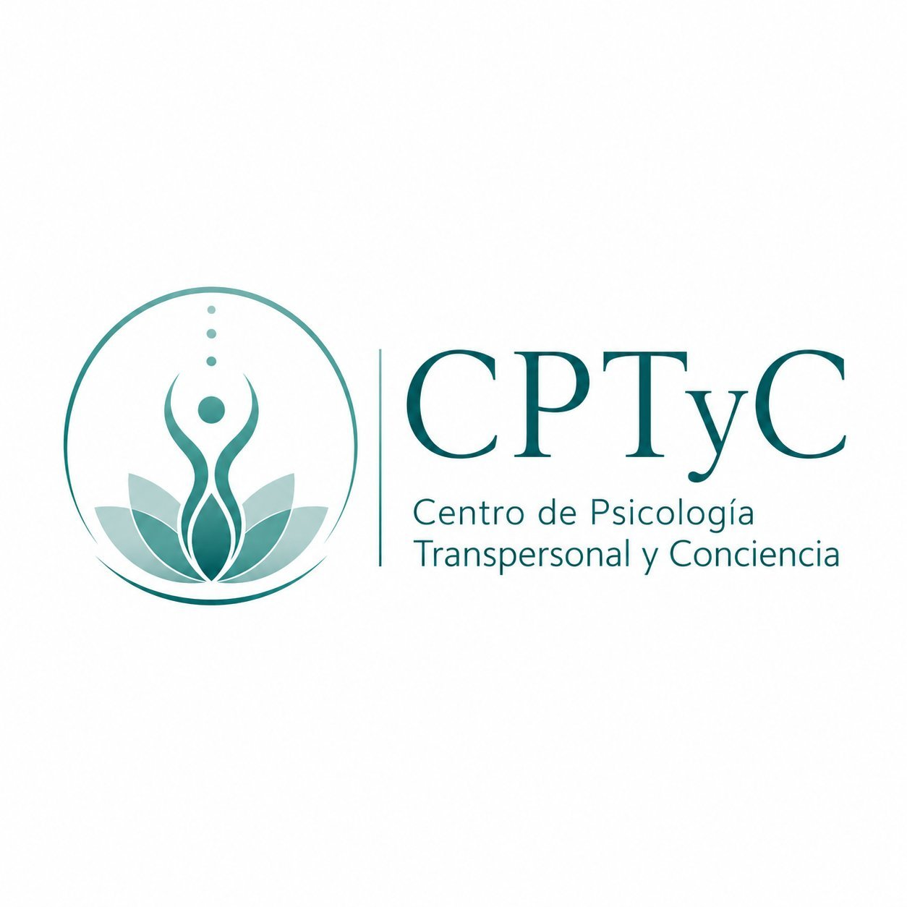
CPTyC es miembro activo de ATHTA — Asociación de Terapeutas Hispanoamericanos Transpersonales y Alternativos.
Nuestras certificaciones están avaladas por dicha asociación, garantizando la calidad y el reconocimiento profesional de cada formación.
Formarte en CPTyC es formarte con respaldo, trayectoria y reconocimiento.
Al completar tu formación recibís el certificado de CPTyC, miembro de ATHTA, que acredita tus estudios y avala tu trayectoria profesional.
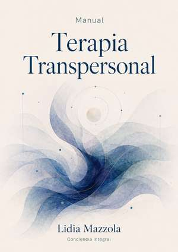
📄 Disponible en: PDF, ePub y Audiolibro 🎧
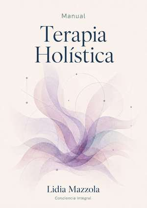
📄 Disponible en: PDF, ePub y Audiolibro 🎧
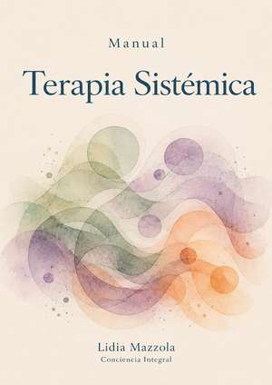
📄 Disponible en: PDF, ePub y Audiolibro 🎧
Conocé y apasionate con nuestras colecciones de libros.
Disponibles en PDF, ePub y Audiolibro.
Cada título es una invitación a mirarte por dentro, comprenderte y seguir creciendo.
Una colección de libros de autoayuda y desarrollo personal para acompañarte en tu proceso de crecimiento y transformación interior.
Los libros más recientes de la colección Conciencia Integral, dedicados a comprender y transformar nuestras emociones más profundas.
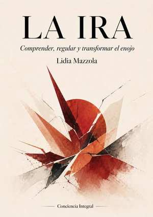
La ira es una guía práctica para comprender, regular y transformar el enojo. A través de explicaciones claras y ejercicios simples, invita a reconocer sus detonantes, su impacto en el cuerpo y su influencia en los vínculos. Un libro para dejar de reaccionar en automático y convertir la ira en claridad, límite y autocuidado.
📄 Disponible en: ePub, PDF y Audiolibro 🎧
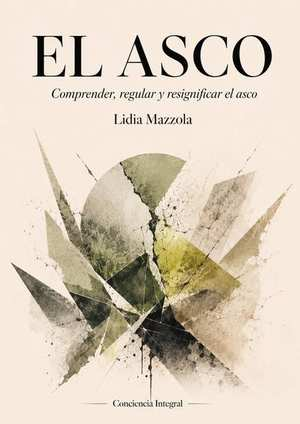
El asco es una guía para comprender una emoción incómoda pero profundamente protectora. A través de un recorrido claro y reflexivo, invita a reconocer el rechazo como frontera entre lo propio, lo ajeno, lo tóxico y lo digno. Un libro para transformar la náusea en conciencia, límite e integración personal.
📄 Disponible en: ePub, PDF y Audiolibro 🎧
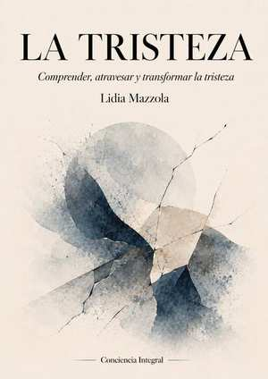
La tristeza es una guía sensible para comprender una emoción que no viene a detenernos, sino a pedirnos pausa y cuidado. A través de metáforas claras y ejercicios simples, invita a reconocer el dolor, atravesar los duelos y acompañar los días grises con ternura. Un libro para transformar la tristeza en escucha, profundidad y resiliencia.
📄 Disponible en: ePub, PDF y Audiolibro 🎧
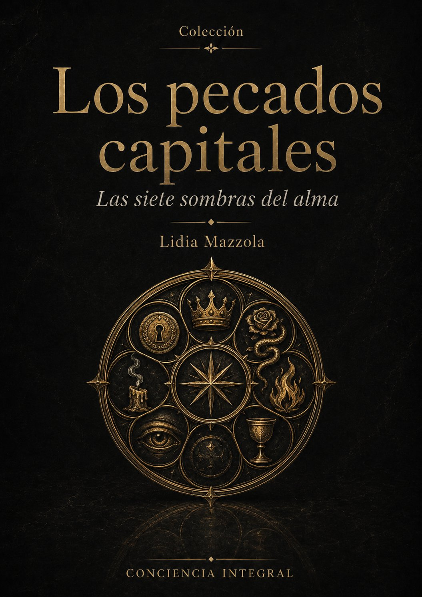
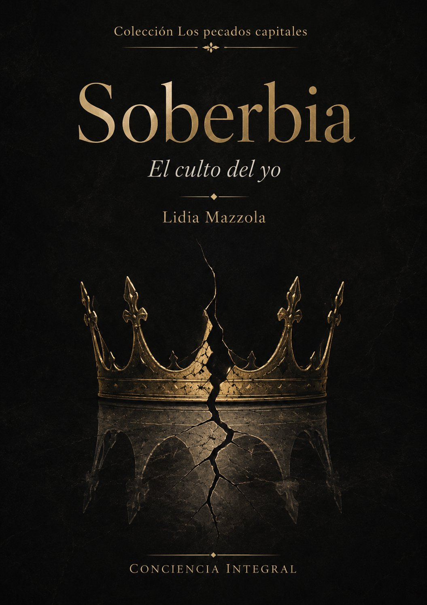
Una indagación sobre el orgullo, la máscara y el espejismo del yo. Cuando la imagen propia se vuelve altar, el alma se distancia de su verdad y comienza la caída silenciosa.
📄 Disponible en: PDF, ePub y Audiolibro 🎧
Un viaje al deseo de poseer, retener y acumular. Allí donde nada alcanza, la abundancia se vacía de sentido y el corazón aprende que no todo valor puede guardarse.
📄 Disponible en: PDF, ePub y Audiolibro 🎧
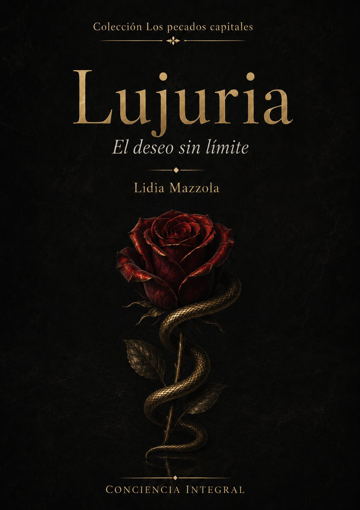
Una exploración del deseo cuando deja de ser impulso vital y se convierte en desborde. Entre seducción, fascinación y vértigo, el cuerpo revela su sombra más intensa.
📄 Disponible en: PDF, ePub y Audiolibro 🎧
Ricardo Robles es un escritor argentino de reconocida trayectoria, galardonado en múltiples ocasiones con el Primer Premio Voces Hispanas (España), obtenido en 1994, 1998 y 2018.
Su obra explora con profundidad y sensibilidad las dimensiones más íntimas del ser humano: las heridas emocionales, los vínculos, la conciencia y el crecimiento interior. Con una escritura que combina rigor psicológico y belleza literaria, sus libros acompañan a los lectores en procesos genuinos de autoconocimiento y transformación.
Actualmente reside en la Patagonia argentina, donde continúa escribiendo y desarrollando su obra.
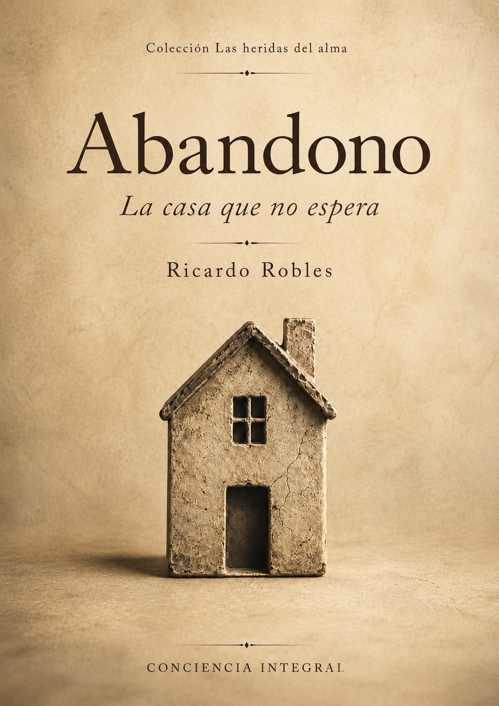
Explora la herida de no haber sido esperado, sostenido o elegido. Un recorrido para dejar de vivir temiendo que todo amor termine yéndose.
📄 Disponible en: PDF, ePub y Audiolibro 🎧
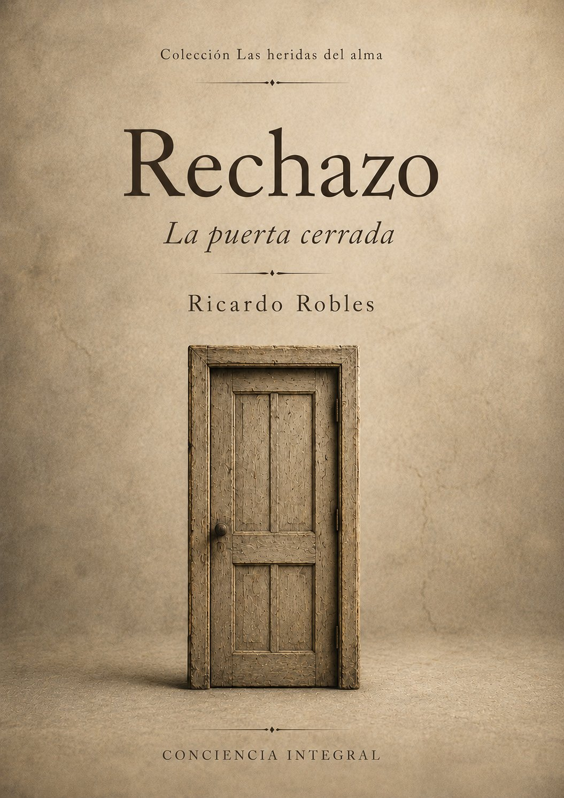
Aborda el dolor de sentirse afuera del deseo, del vínculo o del mundo. Una invitación a recuperar el derecho a existir sin pedir permiso para entrar.
📄 Disponible en: PDF, ePub y Audiolibro 🎧
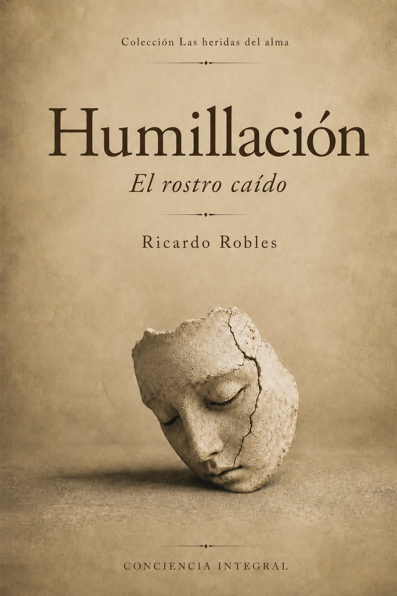
Explora la marca de haber sido mirado desde la vergüenza o la desvalorización. Un camino para levantar el rostro y recuperar la dignidad herida.
📄 Disponible en: PDF, ePub y Audiolibro 🎧
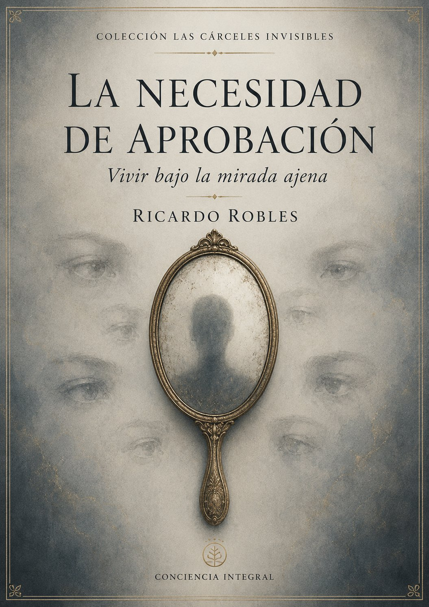
Una mirada sobre la cárcel de vivir pendiente del juicio ajeno. Un camino para recuperar la voz propia y existir sin pedir permiso.
📄 Disponible en: PDF, ePub y Audiolibro 🎧
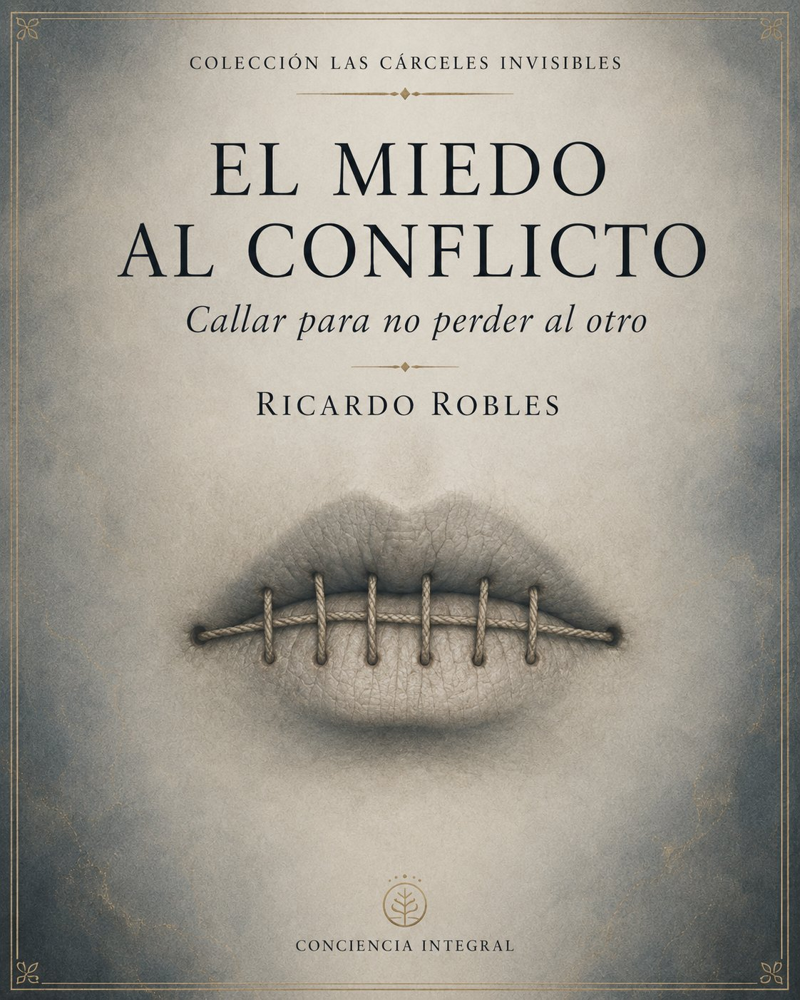
Explora el silencio que parece cuidar el vínculo, pero termina apagando la verdad. Una invitación a descubrir que decir también puede reparar.
📄 Disponible en: PDF, ePub y Audiolibro 🎧
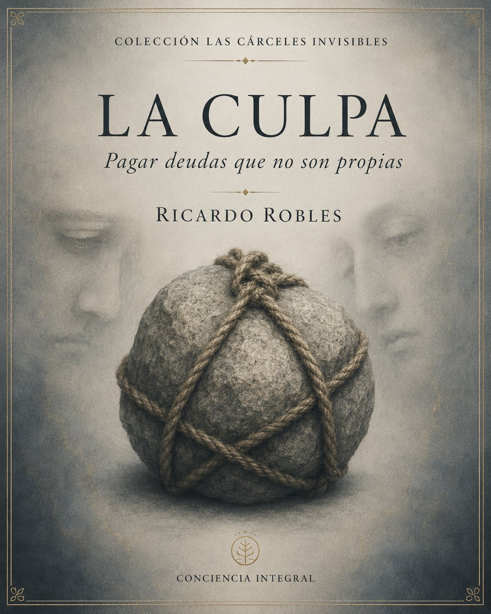
Aborda el peso de cargar deudas emocionales que no nos pertenecen. Un recorrido para soltar el sacrificio y recuperar el deseo propio.
📄 Disponible en: PDF, ePub y Audiolibro 🎧
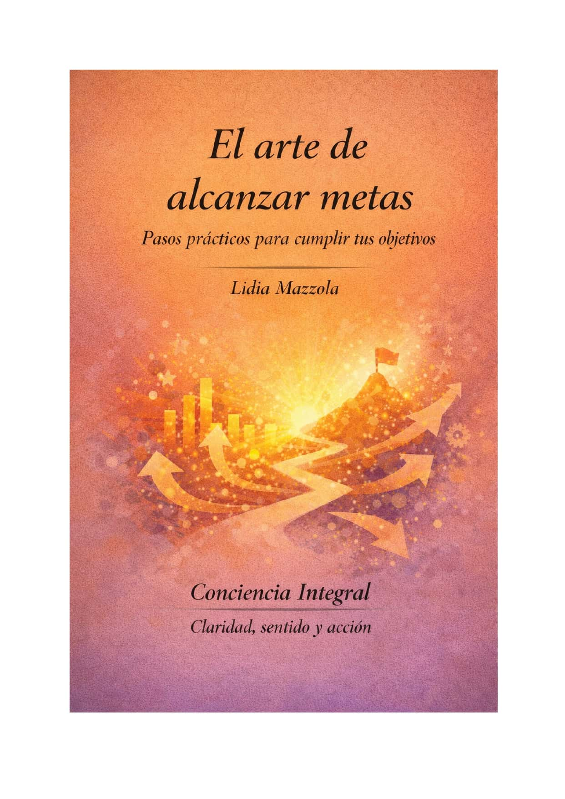
Un enfoque práctico y motivador para definir y alcanzar objetivos conscientes. Guía al lector a planificar con flexibilidad, superar obstáculos internos y mantener la motivación a largo plazo.
📄 Disponible en: ePub, PDF y Audiolibro 🎧
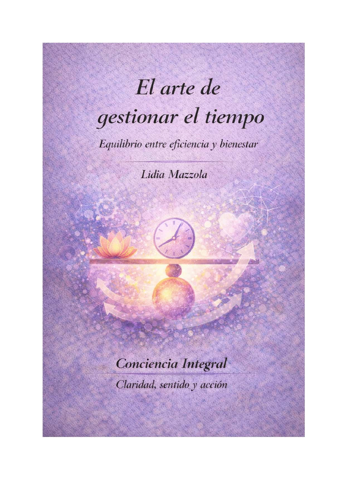
Una invitación a repensar nuestra relación con el tiempo desde una mirada más humana y consciente. Propone herramientas prácticas para equilibrar eficiencia y bienestar, habitando los días con mayor presencia y sentido.
📄 Disponible en: ePub, PDF y Audiolibro 🎧
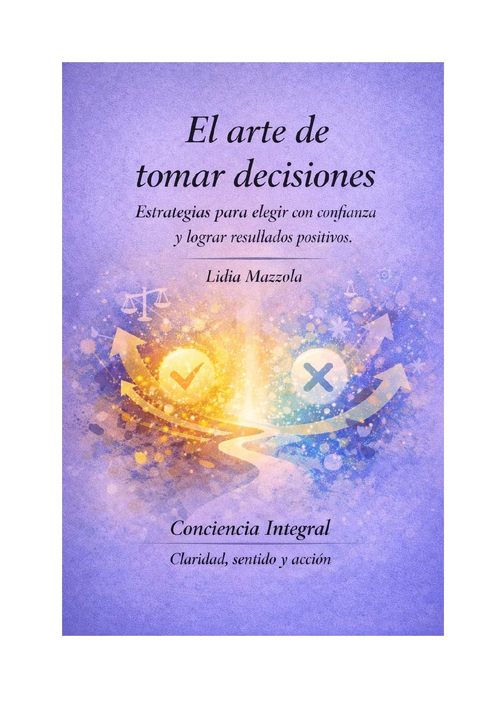
Una guía práctica que ofrece estrategias claras para elegir con confianza en un mundo cambiante. Desde manejar el estrés hasta confiar en la intuición, acompaña el desarrollo de una toma de decisiones consciente y efectiva.
📄 Disponible en: ePub, PDF y Audiolibro 🎧
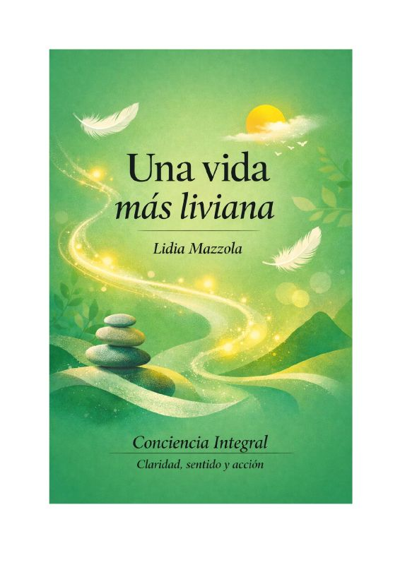
Una invitación a soltar cargas invisibles y reconectar con una forma de vivir más consciente y amable. Reflexiones profundas, relatos cotidianos y preguntas de autorreflexión para quienes sienten que viven en automático y buscan alivio sin desconectarse de la realidad.
📄 Disponible en: ePub, PDF y Audiolibro 🎧
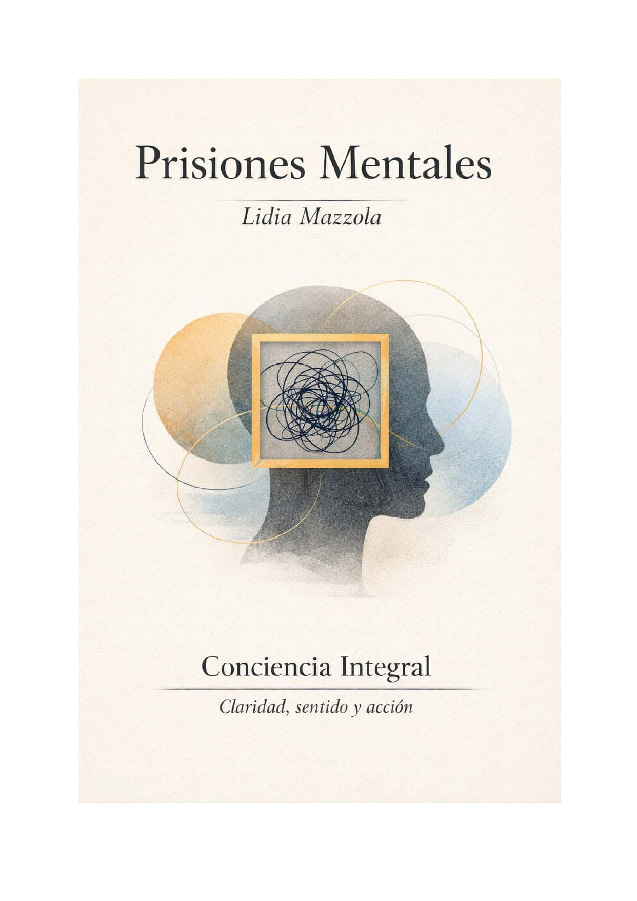
Una invitación a reconocer las estructuras internas que condicionan nuestra forma de vivir, pensar y vincularnos. Explora miedos, creencias, mandatos y exigencias que operan en silencio. Un recorrido profundo, humano y transformador.
📄 Disponible en: ePub, PDF y Audiolibro 🎧
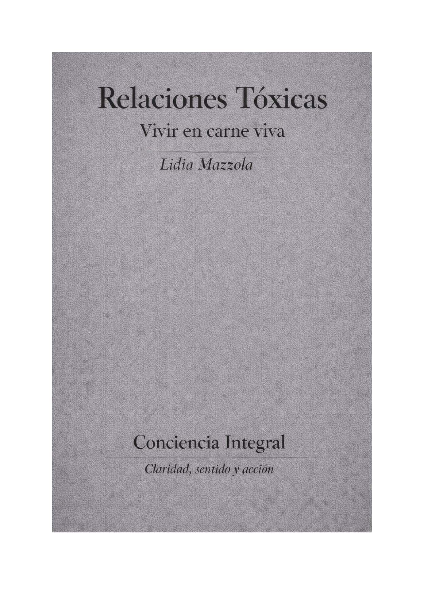
Una guía profunda y honesta que acompaña a quienes sufren vínculos dañinos, ayudándolos a reconocer señales, romper ciclos de dependencia y culpa, y reconstruir su identidad desde la conciencia y el amor propio.
📄 Disponible en: ePub, PDF y Audiolibro 🎧
El Centro de Psicología Transpersonal y Conciencia (CPTyC) nació con la convicción de que el crecimiento personal es un camino que integra la mente, el cuerpo y el espíritu.
Nuestra propuesta formativa combina el rigor académico con la profundidad de las tradiciones de sabiduría, ofreciendo herramientas concretas para el desarrollo personal y profesional.
Nuestros cursos están diseñados para personas que desean formarse como terapeutas o facilitadores, y también para quienes buscan herramientas de autoconocimiento y expansión de conciencia.
Traductora literaria y técnico científica, Psicóloga Social, Terapeuta Transpersonal, Gestáltica, Holística Integral (Internacional) y Sistémica, Psicodramatista, Arteterapeuta y Especialista en Neurociencias, Emociones y Salud Mental. Con más de 30 años de trayectoria, es directora del Centro de Psicología Transpersonal y Conciencia (CPTyC), docente, consultora y escritora comprometida con el desarrollo de la conciencia y el bienestar humano.
Unimos psicología, espiritualidad y neurociencias en una visión integral del ser humano.
Formaciones de calidad con docentes comprometidos con tu proceso de crecimiento.
Llegamos a estudiantes de Argentina y todo el mundo a través de nuestra plataforma online.
Acompañamos procesos reales de cambio interior con herramientas probadas y profundas.
Lo que dicen quienes ya transitaron su formación en el CPTyC.
El curso de Diplomatura en Terapia Transpersonal cambió mi vida de una manera que no esperaba. No solo aprendí herramientas para trabajar con otros, sino que transformé mi propia mirada sobre mí misma y el mundo.
La calidad del contenido y el acompañamiento que recibí superaron todas mis expectativas. Pude estudiar a mi ritmo, desde casa, y sentirme parte de una comunidad real de aprendizaje.
El curso de Registros Akáshicos me abrió una dimensión de trabajo completamente nueva. Hoy lo integro a mi práctica terapéutica y los resultados con mis consultantes son increíbles.
Llegué al CPTyC buscando algo diferente, y lo encontré. El enfoque transpersonal me dio un marco de comprensión que integra lo espiritual y lo psicológico de una manera que nunca había visto en otra formación.
Completé la formación en Tarot Junguiano y fue reveladora. Los contenidos están muy bien estructurados y los docentes tienen una profundidad y calidez que se siente desde el primer módulo.
Hoy ejerzo como terapeuta y buena parte de lo que soy profesionalmente se lo debo a esta formación. El acompañamiento del equipo fue clave en cada etapa del proceso.
La formación en Armonización Energética me dio herramientas concretas que empecé a aplicar desde el primer mes. Muy recomendable para quienes quieren profundizar en el trabajo con energía de manera seria y fundamentada.
El curso de Niño Interior fue de los más movilizadores que hice. No solo desde lo profesional, sino desde lo personal. Es una formación que te transforma y te da recursos genuinos para acompañar a otros.
Lo que más valoro del CPTyC es la coherencia entre lo que enseñan y cómo lo enseñan. Hay un cuidado real por el proceso de cada alumno que no es fácil de encontrar en otros espacios de formación online.
Estudiar Mindfulness para Ansiedad y Estrés me cambió la vida cotidiana. Las herramientas son prácticas, profundas y aplicables desde el primer día. Recomendaría este curso a cualquier persona, sea o no profesional de la salud.
La Especialización en Mindfulness me permitió consolidar una práctica que hoy es el eje de mi trabajo clínico. La solidez académica y la profundidad espiritual de la formación son una combinación única.
¿Tenés dudas sobre algún curso? ¿Querés saber cuál es el mejor camino para tu formación? Escribinos y te respondemos a la brevedad.
Estamos para acompañarte en el proceso de elegir la formación que mejor se adapte a tus intereses y objetivos. No dudes en consultarnos.